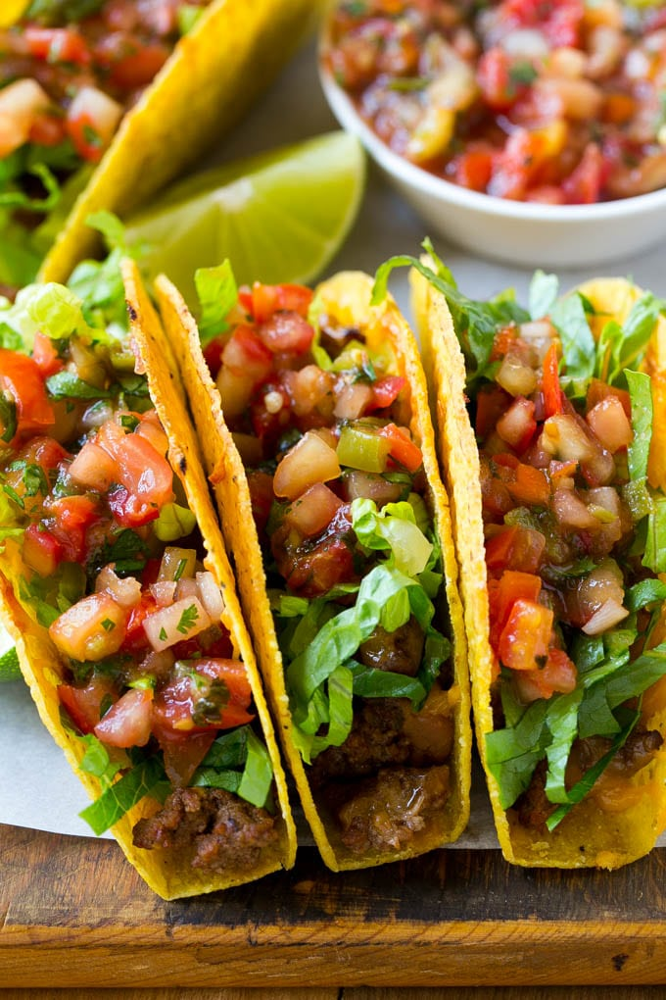

Tacos!!
An easy, but yummy, dinner!
Ingredients
- Diced tomatoes
- Diced onion
- Diced lettuce
- 1 lb of ground beef
- Taco seasoning
- Package of hard taco shells
- Sour cream
- Grated cheddar cheese
Instructions
- Heat taco shells as directed on package
- Apply oil on 10-inch skillet and turn up to medium heat
- Cook beef medium heat after skillet is warm for 8 to 10 minutes. Chop into tiny pieces using spatula while cooking. Cook until browned
- Add taco seasoning and some water. Cook for a little longer
- Put graded chees, ontion, tomatoes, lettuce, and beef onto taco shell. Apply dollop of sour cream and eat!
Chef's Advice: If you'd rather have soft shells heat corn of flour tortillas on a skillet for best results.